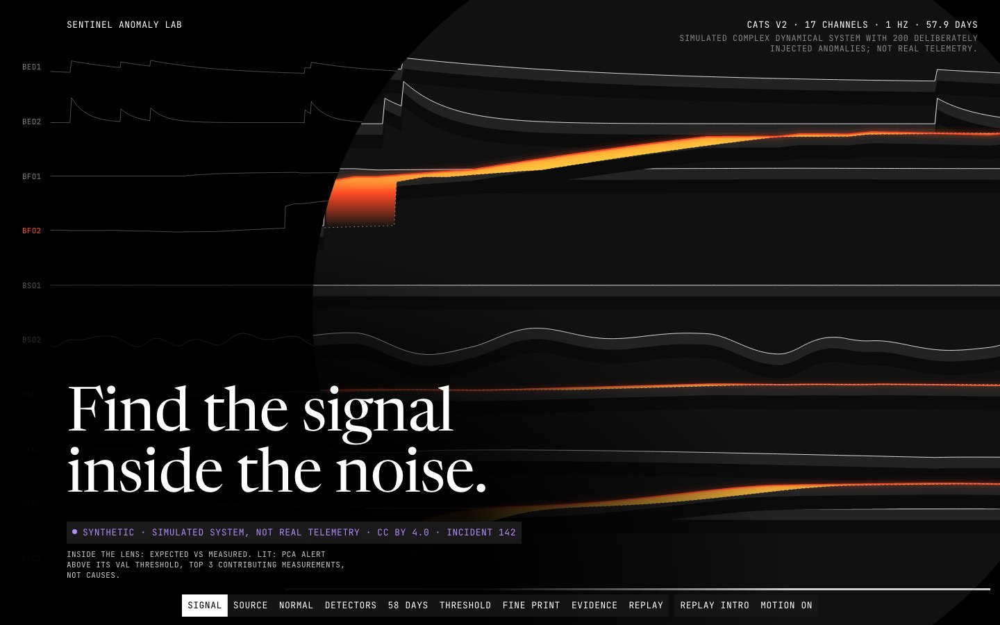

Data story · Python pipeline · In-browser metrics · 2026-10
Find the Signal Inside the Noise
Five anomaly detectors benchmarked on a labelled, simulated 57.9-day telemetry record, scored by whole incidents instead of flattering points, with a threshold lab that recomputes the metrics in your browser.

Dataset: CATS v2 (Solenix Engineering GmbH / Patrick Fleith, doi:10.5281/zenodo.8338435, CC BY 4.0). It is a simulator output with deliberately injected anomalies, so every number here is SIMULATED, not evidence about real telemetry. Changes made: quantised and windowed; scores and metrics are derived results of this project.
01 — The problem
Anomaly detectors are usually ranked by point-wise F1, which rewards flagging the easy points inside a fault and says nothing about what an operator lives with: how many faults were caught, how long it took, and how many false alerts arrive per day.
The questions: on a labelled record with 200 injected faults, which of five detectors catches the most whole incidents at an alert budget a person could tolerate, how much does point-adjusted scoring inflate the picture, and do thresholds tuned on validation hold on test?
02 — What I built
An offline pipeline and a static site joined by a contract.
- Pipeline: CATS v2 downloaded with md5 verification, 5 million rows at 1 Hz across 17 channels, a strict train, validation and test split with no leakage tests, and JSON artifacts each with a schema.
- Detectors: robust z-score, PCA reconstruction, Isolation Forest, change-point (ruptures, made causal by a delay) and a supervised gradient-boosted model, all scored by event recall, alert precision, false alerts per day and detection delay.
- Site: a scroll story through a lens that shows expected against measured, a threshold lab that recomputes every metric in the browser from published scores, and a replay of a real incident window. Every figure carries an honesty tag.
03 — How it was built
- 01
Verify the record before using it
Labels are checked against the index base (the metadata end is exclusive; an inclusive reading mismatches 200 rows), 22 data-quality checks run, and detectors are fitted on train only, which a test proves by corrupting validation and test and watching the fit not move.
- 02
Score by incident, not by point
A fault is caught if at least one flagged second falls inside its labelled span; a false alert is one that overlaps no span (plus 60 s). Point F1 is reported next to point-adjusted F1 only to show how far it inflates: up to 18.6 times here.
- 03
Choose thresholds on validation, show test
The operating points are picked on validation and the test split is shown, never used for choosing. The robust z-score's one-alert-a-day line gave 0.97 on validation and 2.0 on test, and the site says so.
- 04
Recompute in the browser
The threshold lab rebuilds detections and metrics from published scores. A set of 17 metric vectors, generated by an independent plain-loop implementation, must match the browser's numbers exactly.
- 05
Name what it does not show
Isolation Forest is weak here (average precision 0.19 on test) because the faults are relations between channels, not rare points. Attribution ranks which measurements moved, not why. One run, one seed, one system.
04 — Results
Detectors. On the test split the PCA detector at its best event-F1 point catches 41 of 67 incidents (event recall 0.61, 95% interval about plus or minus 0.11) at 98% alert precision, 0.14 false alerts a day and a median delay of 107 s. Its point F1 is 0.47 against 0.82 point-adjusted. The change-point detector catches 42% at 61% precision and 2.7 false alerts a day. For attribution, PCA names the true root-cause channel first 64% of the time on test against 10% for random.
Measured on the live site. Lighthouse x3 against the public URL, warm: mobile performance 0.99, LCP 1.54 to 1.61 s, CLS 0, accessibility 1.00; desktop performance 0.99 to 1.00, LCP 0.33 to 0.35 s. The first cold request right after deploy scored mobile 0.68 with LCP 3.9 s and is kept in the repo evidence. At 1440 and 390 wide: 19 requests, 0 failed, 0 console errors, 0 external hosts. Tests: pytest 42, Vitest 43, Playwright e2e 32 of 32 including route-block retry states and a whole-document collision walk.
Honest limits: the data is simulated, the final visual review was a single-reviewer read of screenshots at 1440, 768 and 390, not a fresh independent QA pass.
05 — What I'd do next
- Run the same protocol on a real, licensed telemetry set where labels are human and late.
- Add multiple seeds and report interval estimates for every detector, not just the best one.
- Replace the delay-based change-point with an online detector designed for alerting.